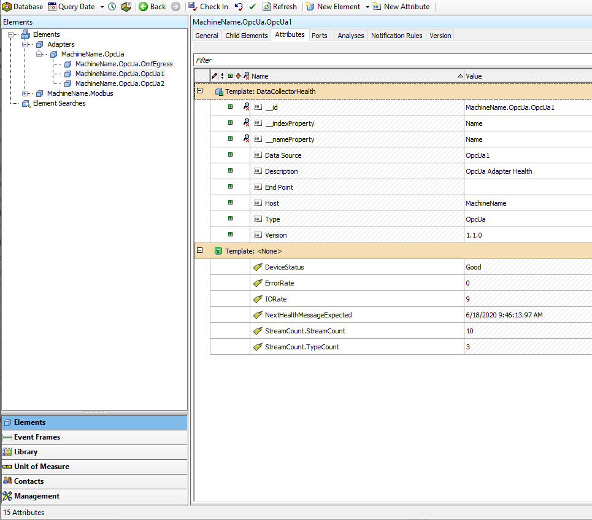

Health and Diagnostics
PI Adapters produce various types of health data. You can use health data to ensure that your adapters are running properly and that data flows to the configured OMF endpoints. For more information on available health data, see Adapter health.
PI Adapters also produce diagnostic data. You can use diagnostic data to find more information about a particular adapter instance. Diagnostic data lives alongside the health data and you can egress it using a health endpoint and setting EnableDiagnostics totrue. You can configure EnableDiagnostics in the system's General configuration. For more information on available diagnostics data, see Adapter diagnostics.
Health endpoint differences
Two OMF endpoints are currently supported for adapter health data:
- PI Web API
- OSIsoft Cloud Services
There are a few differences in how these two systems treat the associated health and diagnostics data.
PI Web API parses the information and sends it to configured PI servers for the OMF endpoint. The static data is used to create a hierarchy on a PI AF server similar to the following example:

The dynamic health data is time-series data that is stored in PI points on a PI Data Archive. You can see it in the AF hierarchy as PI point data reference attributes.
OSIsoft Cloud Services does not currently provide a way to store the static metadata. For OCS-based adapter health endpoints, only the dynamic data is stored. Each value is its own stream with the timestamp property as the single index.